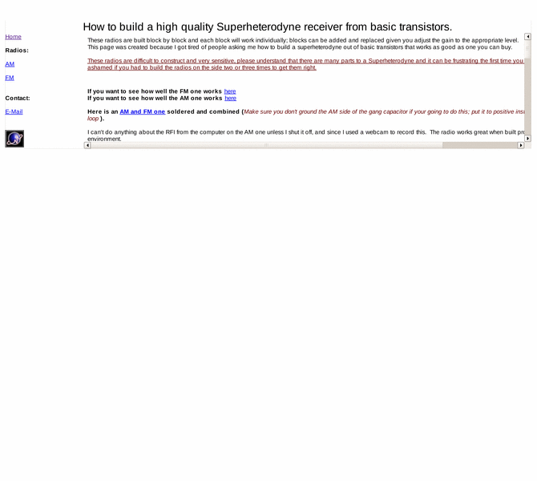

Previewing: How to build a high quality Superheterodyne receiver Previewing: How to build a high quality Superheterodyne receiver 
Use the left/right red arrow controls to navigate through this ring - Click the preview image to visit the member site.

How to build a high quality AM / FM Superheterodyne receiver from basic transistors. (This is the type of radio used in your car, cellphone, wireless Ethernet adapter, and about 99% of all wireless Digital / analog devices in some form or another.)
How to build a high quality Superheterodyne receiver owned by:
 quazar quazar
A member of the original webring since 08/26/2005.
|
|